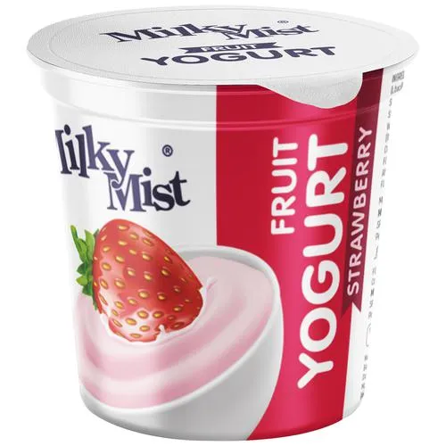

La etiqueta principal utilizada para crear tablas es "table" que define el inicio y el fin de la tabla en HTML.
La etiqueta que se utilizapara definir una fila en una tablas es "tr", dentro de esta etiqueta, se deben colocar las celdas de esa fila.
La etiqueta utilizada para crear una celda de encabezado en una tabla es "th" y estas suelen contener información importante y se muestran en negrita de forma predeterminada.
En este caso la celda que se utiliza es "td", y contienen la información real que se muestra en la tabla.
El atributo que se utiliza es colspan.
En este caso el atributo que se utiliza es rowspan.
La etiqueta para definir las filas es "tr" y se utilizaria 10 veces.
| Alimento | Caloria | Tipo | Imagen |
|---|---|---|---|
| Manzana | 52 | Fruta | |
| Manteca | 898 | lacteo | |
| Batata | 86 | Verdura | |
| Naranja | 47 | Fruta | |
| Yogurt | 59 | Lacteo |  |